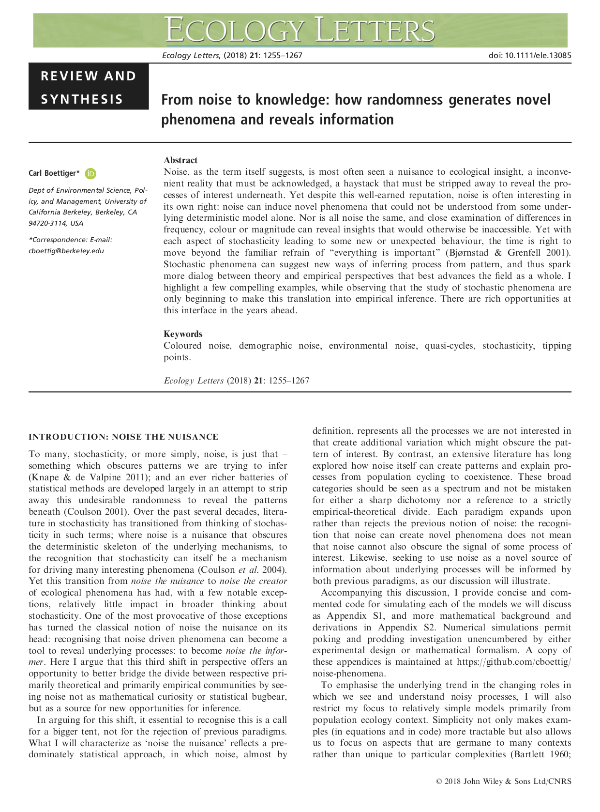
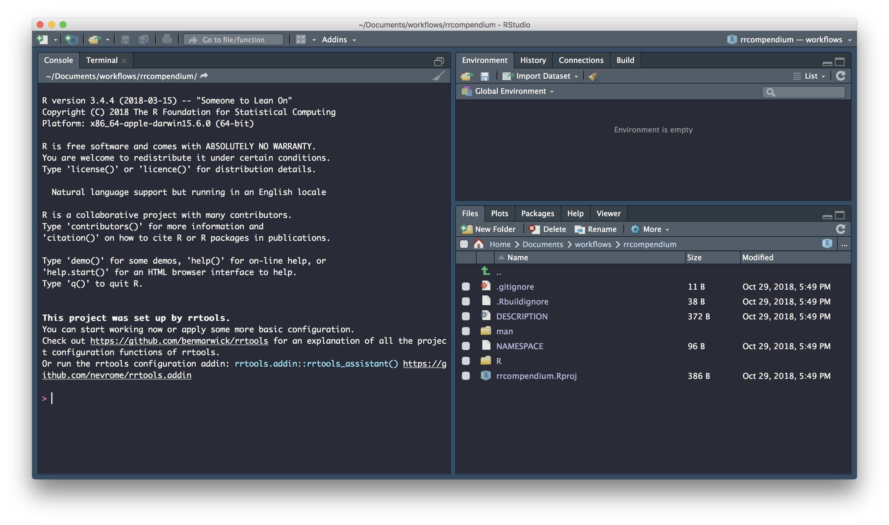

Create a Research Compendium
Last updated: 2019-05-03
Checks: 6 0
Knit directory: rrtools-repro-research/
This reproducible R Markdown analysis was created with workflowr (version 1.3.0). The Checks tab describes the reproducibility checks that were applied when the results were created. The Past versions tab lists the development history.
Great! Since the R Markdown file has been committed to the Git repository, you know the exact version of the code that produced these results.
Great job! The global environment was empty. Objects defined in the global environment can affect the analysis in your R Markdown file in unknown ways. For reproduciblity it’s best to always run the code in an empty environment.
The command set.seed(20181015) was run prior to running the code in the R Markdown file. Setting a seed ensures that any results that rely on randomness, e.g. subsampling or permutations, are reproducible.
Great job! Recording the operating system, R version, and package versions is critical for reproducibility.
Nice! There were no cached chunks for this analysis, so you can be confident that you successfully produced the results during this run.
Great! You are using Git for version control. Tracking code development and connecting the code version to the results is critical for reproducibility. The version displayed above was the version of the Git repository at the time these results were generated.
Note that you need to be careful to ensure that all relevant files for the analysis have been committed to Git prior to generating the results (you can use wflow_publish or wflow_git_commit). workflowr only checks the R Markdown file, but you know if there are other scripts or data files that it depends on. Below is the status of the Git repository when the results were generated:
Ignored files:
Ignored: .DS_Store
Ignored: .Rhistory
Ignored: .Rproj.user/
Ignored: analysis/.DS_Store
Ignored: analysis/data/
Ignored: analysis/package.Rmd
Ignored: assets/
Ignored: docs/.DS_Store
Ignored: docs/assets/Boettiger-2018-Ecology_Letters.pdf
Ignored: docs/assets/Packaging-Data-Analytical Work-Reproducibly-Using-R-and-Friends.pdf
Ignored: docs/css/
Ignored: libs/
Note that any generated files, e.g. HTML, png, CSS, etc., are not included in this status report because it is ok for generated content to have uncommitted changes.
These are the previous versions of the R Markdown and HTML files. If you’ve configured a remote Git repository (see ?wflow_git_remote), click on the hyperlinks in the table below to view them.
| File | Version | Author | Date | Message |
|---|---|---|---|---|
| html | f7b42e5 | annakrystalli | 2019-05-03 | address merge conflict |
| Rmd | c0b47a4 | Ania Tassinari | 2019-05-03 |
Add example name parameter for use_mit_license()
|
| html | 6fa5089 | Anna Krystalli | 2019-03-15 | update navbar |
| html | a59b949 | Anna Krystalli | 2019-03-15 | update docs |
| Rmd | ad92cb0 | Anna Krystalli | 2019-03-15 | update use_github instructions |
| html | f78d1b5 | annakrystalli | 2018-11-27 | Build site. |
| Rmd | ebde789 | annakrystalli | 2018-11-27 | actually save the changes made in previous commit |
| html | c9513e9 | annakrystalli | 2018-11-27 | Build site. |
| Rmd | 241086e | annakrystalli | 2018-11-27 | add cboettig, deactivate webshot, add |
| html | 95a9aa0 | annakrystalli | 2018-11-10 | Build site. |
| html | 97818bf | annakrystalli | 2018-11-10 | Build site. |
| html | 2c1e957 | annakrystalli | 2018-10-31 | Build site. |
| html | c26c936 | annakrystalli | 2018-10-31 | Build site. |
| html | 52adf4f | annakrystalli | 2018-10-30 | Build site. |
| Rmd | f7c3c51 | annakrystalli | 2018-10-30 | commit final draft |
| html | 921a7f8 | annakrystalli | 2018-10-30 | commit docs |
| Rmd | f1468ac | annakrystalli | 2018-10-30 | commit Rmd |
Workshop setup
Launch Rstudio
Let’s begin by launching Rstudio
Install packages
Next, let’s install the packages we’ll need, starting with rrtools (if you haven’t got devtools installed, you’ll need to before you can install rrtools from GitHub).
Installing rrtools imports many of the packages we’ll need today (eg, have a look at the imports section of the DESCRIPTION file).
Imports: devtools, git2r, whisker, rstudioapi, rmarkdown, knitr,
bookdown, curl, RCurl, jsonlite, methods, httr, usethis, clisymbols,
crayon, glue, readr (>= 1.1.1)Now, install some additional packages we’ll need for the workshop.
install.packages(c(
# source paper analysis
"dplyr", "ggplot2", "ggthemes", "here",
# bibliographic / publishing
"citr", "rticles",
# documentation
"roxygen2",
# graphics
"Cairo"))Get workshop materials
Today we’ll be working with a subset of materials from the published compendium of code, data, and author’s manuscript:
Carl Boettiger. (2018, April 17). cboettig/noise-phenomena: Supplement to: “From noise to knowledge: how randomness generates novel phenomena and reveals information” (Version revision-2). Zenodo. http://doi.org/10.5281/zenodo.1219780
accompanying the publication:
Carl Boettiger  . From noise to knowledge: how randomness generates novel phenomena and reveals information. Published in Ecology Letters, 22 May 2018 https://doi.org/10.1111/ele.13085
. From noise to knowledge: how randomness generates novel phenomena and reveals information. Published in Ecology Letters, 22 May 2018 https://doi.org/10.1111/ele.13085

You can download the materials using usethis::use_course() and supplying a path to a destination folder to argument destdir:
This will download everything we need from a GitHub repository as a .zip file, unzip it and launch it in a new Rstudio session for us to explore.
Inspect materials
├── README.md <- .......................repo README
├── analysis.R <- ......................analysis underlying paper
├── gillespie.csv <- ...................data
├── paper.pdf <- .......................LaTex pdf of the paper
├── paper.txt <- .......................text body of the paper
├── refs.bib <- ........................bibtex bibliographic file
└── rrtools-wkshp-materials.Rproj <- ...rstudio project fileIn this workshop we’ll attempt a partial reproduction of the original paper using the materials we’ve just downloaded.
We’ll use this as an opportunity to create a new research compendium using rrtools and friends! 🎊
Create compendium
Now that we’ve got all the materials we need, let’s start by *creating a blank research compendium for us to work in.
load library
First we need to load rrtools
This performs a quick check to confirm you have Git installed and configured
If you do, you should see the following output in the console.
configure git
If your git configuration hasn’t been set yet, you can use usethis::use_git_config()
Set git configuration:
Check git configuration:
$user.name
[1] "Jane"
$user.email
[1] "jane@example.org"create compendium
Now we’re ready to create our compendium. We use function rrtools::use_compendium and supply it with a path at which our compendium will be created. The final part of our path becomes the compendium name. Because the function effectively creates a package, only a single string of lowercase alpha characters is accepted as a name. so let’s go for rrcompendium as the final part of our path.
To create rrcompendium in a directory called Documents/workflows/ I use:
Go ahead and create a compendium at a location of your choice. Stick with compendium name rrcompendium for ease of following the materials. If the call was successfull you should see the following console output:
✔ Setting active project to '/Users/Anna/Documents/workflows/rrcompendium'
✔ Creating 'R/'
✔ Creating 'man/'
✔ Writing 'DESCRIPTION'
✔ Writing 'NAMESPACE'
✔ Writing 'rrcompendium.Rproj'
✔ Adding '.Rproj.user' to '.gitignore'
✔ Adding '^rrcompendium\\.Rproj$', '^\\.Rproj\\.user$' to '.Rbuildignore'
✔ Opening new project 'rrcompendium' in RStudio
✔ The package rrcompendium has been created
✔ Opening the new compendium in a new RStudio session...
Next, you need to: ↓ ↓ ↓
● Edit the DESCRIPTION file
● Use other 'rrtools' functions to add components to the compendiumand a new Rstudio session launched for the compendium:

Initiate git
We can initialise our compendium with .git using:
N.B. Beware, you may have ended up with two Rstudio sessions of rrcompendium. Make sure to only have one session of a single project at one time to avoid problems.
Inspect templates
.
├── DESCRIPTION <- .............................package metadata
| dependency management
├── NAMESPACE <- ...............................AUTO-GENERATED on build
├── R <- .......................................folder for functions
├── man <- .....................................AUTO-GENERATED on build
└── rrcompendium.Rproj <- ......................rstudio project filerrtools::use_compendium() creates the bare backbone of infrastructure required for a research compendium. At this point it provides facilities to store general metadata about our compendium (eg bibliographic details to create a citation) and manage dependencies in the DESCRIPTION file and store and document functions in the R/ folder. Together these allow us to manage, install and share functionality associated with our project.
update description file
Let’s update some basic details in the DESCRIPTION file:
Package: rrcompendium
Title: What the Package Does (One Line, Title Case)
Version: 0.0.0.9000
Authors@R:
person(given = "First",
family = "Last",
role = c("aut", "cre"),
email = "first.last@example.com")
Description: What the package does (one paragraph)
License: What license it uses
ByteCompile: true
Encoding: UTF-8
LazyData: true
Title
Let’s start with giving our compendium a descriptive title:
Title: Partial Reproduction of Boettiger Ecology Letters 2018;21:1255–1267
with rrtoolsVersion
We don’t need to change the version now but using semantic versioning for our compendium can be a really useful way to track versions. In general, versions below 0.0.1 are in development, hence the DESCRIPTION file defaults to 0.0.0.9000.
Description
Let’s add a bit more detail about the contents of the compendium in the Description.
Description: This repository contains the research compendium of the
partial reproduction of Boettiger Ecology Letters 2018;21:1255–1267.
The compendium contains all data, code, and text associated with this sub-section of the analysisLicense
Finally, let’s add a license for the material we create. We’ll use an MIT license. Note however that his only covers the code. We can do this with:
✔ Setting License field in DESCRIPTION to 'MIT + file LICENSE'
✔ Writing 'LICENSE.md'
✔ Adding '^LICENSE\\.md$' to '.Rbuildignore'This creates files LICENSE and LICENSE.md and updates the DESCRIPTION file with details of the license.
License: MIT + file LICENSERecap
We’ve finished updating our DESCRIPTION file! 🎉
It should look a bit like this:
Package: rrcompendium
Title: Partial Reproduction of Boettiger Ecology Letters 2018;21:1255–1267
with rrtools
Version: 0.0.0.9000
Authors@R:
person(given = "Anna",
family = "Krystalli",
role = c("aut", "cre"),
email = "annakrystalli@googlemail.com")
Description: This repository contains the research compendium of the partial
reproduction of Boettiger Ecology Letters 2018;21:1255–1267. The compendium
contains all data, code, and text associated with this sub-section of the
analysis.
License: MIT + file LICENSE
ByteCompile: true
Encoding: UTF-8
LazyData: true
and your project folder should contain:
.
├── DESCRIPTION
├── LICENSE
├── LICENSE.md
├── NAMESPACE
├── R
├── man
└── rrcompendium.RprojLet’s commit our work and move on to preparing our compendium for sharing on GitHub.
Sharing a compendium on GitHub
Set up GITHUB PAT
You’ll need a Personal Authorisation Token (PAT) from GitHub to be able to interact with GitHub through R.
Use:
to open up the GitHub panel to generate your PAT.

Copy the generated PAT to paste into your .Renviron file as system variable GITHUB_PAT.
You can open your .Renviron file for editing with:
Paste your copied PAT into your .Renviron file as system variable GITHUB_PAT, save and close. Now everytime R is reloaded, your PAT will be stored in system variable GITHUB_PAT.

Create GitHub repository
Next, we’ll create a GitHub repository to share our compendium. We’ll make use of our GITHUB_PAT and go for https authentication. We can do this with function:
✔ Setting active project to '/Users/Anna/Documents/workflows/rrcompendium'
● Check title and description
Name: rrcompendium
Description: Partial Reproduction of Boettiger Ecology Letters 2018;21:1255–1267 with rrtools
The function will prompt you to confirm the name and description for your GitHub repo which it parses from our DESCRIPTION file. If everything looks good select the affirmative option.
Are title and description ok?
1: Not now
2: Definitely
3: Nope
If creation of the repo was successfull you should see the following console output:
✔ Creating GitHub repository
✔ Adding GitHub remote
✔ Adding GitHub links to DESCRIPTION
✔ Setting URL field in DESCRIPTION to 'https://github.com/annakrystalli/rrcompendium'
✔ Setting BugReports field in DESCRIPTION to 'https://github.com/annakrystalli/rrcompendium/issues'
✔ Pushing to GitHub and setting remote tracking branch
✔ Opening URL https://github.com/annakrystalli/rrcompendiumCreate README
Every GitHub repository needs a README landing page.
We can create an rrtools README template using:
✔ Creating 'README.Rmd' from template.
✔ Adding 'README.Rmd' to `.Rbuildignore`.
● Modify 'README.Rmd'
✔ Rendering README.Rmd to README.md for GitHub.
✔ Adding code of conduct.
✔ Creating 'CONDUCT.md' from template.
✔ Adding 'CONDUCT.md' to `.Rbuildignore`.
✔ Adding instructions to contributors.
✔ Creating 'CONTRIBUTING.md' from template.
✔ Adding 'CONTRIBUTING.md' to `.Rbuildignore`.
This generates README.Rmd and renders it to README.md, ready to display on GitHub. It contains:
- a template citation to show others how to cite your project.
- license information for the text, figures, code and data in your compendium
---
output: github_document
---
<!-- README.md is generated from README.Rmd. Please edit that file -->
``{r, echo = FALSE}
knitr::opts_chunk$set(
collapse = TRUE,
comment = "#>",
fig.path = "README-"
)
``
# rrcompendium
This repository contains the data and code for our paper:
> Authors, (YYYY). _Title of paper_. Name of journal/book <https://doi.org/xxx/xxx>
Our pre-print is online here:
> Authors, (YYYY). _Title of paper_. Name of journal/book, Accessed 03 May 2019. Online at <https://doi.org/xxx/xxx>
### How to cite
Please cite this compendium as:
> Authors, (2019). _Compendium of R code and data for 'Title of paper'_. Accessed 03 May 2019. Online at <https://doi.org/xxx/xxx>
### How to download or install
You can download the compendium as a zip from from this URL: </archive/master.zip>
Or you can install this compendium as an R package, rrcompendium, from GitHub with:
### Licenses
**Text and figures :** [CC-BY-4.0](http://creativecommons.org/licenses/by/4.0/)
**Code :** See the [DESCRIPTION](DESCRIPTION) file
**Data :** [CC-0](http://creativecommons.org/publicdomain/zero/1.0/) attribution requested in reuse
### Contributions
We welcome contributions from everyone. Before you get started, please see our [contributor guidelines](CONTRIBUTING.md). Please note that this project is released with a [Contributor Code of Conduct](CONDUCT.md). By participating in this project you agree to abide by its terms.
The call also adds two other markdown files:
CONDUCT.md: a code of conduct for usersCONTRIBUTING.md:: basic instructions for people who want to contribute to our compendium
update README
There’s five main edits we need to make to the template:
edit compendium DOI details
Although we don’t have a link to the DOI, we can complete the rest of the details and leave it as a place holder.
This repository contains the data and code for our reproduction paper:
> Krystalli, A, (2018). _Partial Reproduction of Boettiger Ecology Letters 2018;21:1255–1267 with rrtools_. <https://doi.org/{DOI-to-paper}>edit paper.pdf DOI
Our reproduction pre-print is online here:
> Krystalli, A, (2018). _Partial Reproduction of Boettiger Ecology Letters 2018;21:1255–1267 with rrtools_, Accessed 03 May 2019. Online at <https://doi.org/{DOI-to-compendium}>
edit compendium citation
Please cite this compendium as:
> Krystalli, A, (2019). _Compendium of R code and data for 'Partial Reproduction of Boettiger Ecology Letters 2018;21:1255–1267 with rrtools'_. Accessed 03 May 2019. Online at <https://doi.org/{DOI-to-compendium}>update zip url
This is a link to download a zipped file of the repository. To update the template, just paste the url of your compendium repository like so:
### How to download or install
You can download the compendium as a zip from from this URL: <https://github.com/annakrystalli/rrcompendium/archive/master.zip>adjust data LICENSE
Let’s adjust the data LICENSE to match the source compendium license, which is CC-BY 4.0. Let’s also add Carl Boettiger as copyright holder of the data.
**Text and figures :** [CC-BY-4.0](http://creativecommons.org/licenses/by/4.0/), Copyright (c) 2018 Carl Boettiger.
**Code :** See the [DESCRIPTION](DESCRIPTION) file
**Data :** [CC-BY-4.0](http://creativecommons.org/licenses/by/4.0/), Copyright (c) 2018 Carl Boettiger.render README.md, commit and push to GitHub
We’ve now completed our rrtools README.Rmd! 🎉
Render it to update the
README.mdfile which is displayed on GitHubCommit and push to GitHub.
You’re Github repository README should look like this on the site:

and your project folder should contain:
.
├── CONDUCT.md
├── CONTRIBUTING.md
├── DESCRIPTION
├── LICENSE
├── LICENSE.md
├── NAMESPACE
├── R
├── README.Rmd
├── README.md
├── man
└── rrcompendium.RprojSetting up the analysis folder
Create analysis
We now need an analysis folder to contain our analysis and paper. We can do this using function rrtools::use_analysis()
The function has three location = options:
top_levelto create a top-levelanalysis/directoryinstto create aninst/directory (so that all the sub-directories are available after the package is installed)vignettesto create avignettes/directory (and automatically update theDESCRIPTION).
The default is a top-level analysis/.
✔ Adding bookdown to Imports
✔ Creating 'analysis' directory and contents
✔ Creating 'analysis'
✔ Creating 'analysis/paper'
✔ Creating 'analysis/figures'
✔ Creating 'analysis/templates'
✔ Creating 'analysis/data'
✔ Creating 'analysis/data/raw_data'
✔ Creating 'analysis/data/derived_data'
✔ Creating 'references.bib' from template.
✔ Creating 'paper.Rmd' from template.
Next, you need to: ↓ ↓ ↓ ↓
● Write your article/report/thesis, start at the paper.Rmd file
● Add the citation style library file (csl) to replace the default provided here, see https://github.com/citation-style-language/
● Add bibliographic details of cited items to the 'references.bib' file
● For adding captions & cross-referencing in an Rmd, see https://bookdown.org/yihui/bookdown/
● For adding citations & reference lists in an Rmd, see http://rmarkdown.rstudio.com/authoring_bibliographies_and_citations.html
Note that:
⚠ Your data files are tracked by Git and will be pushed to GitHubRegardless for location option, the contents of the created sub-directories are the same:
analysis/
|
├── paper/
│ ├── paper.Rmd # this is the main document to edit
│ └── references.bib # this contains the reference list information
├── figures/ # location of the figures produced by the Rmd
|
├── data/
│ ├── DO-NOT-EDIT-ANY-FILES-IN-HERE-BY-HAND
│ ├── raw_data/ # data obtained from elsewhere
│ └── derived_data/ # data generated during the analysis
|
└── templates
├── journal-of-archaeological-science.csl
| # this sets the style of citations & reference list
├── template.docx # used to style the output of the paper.Rmd
└── template.RmdLet’s inspect
paper.Rmd
paper.Rmd is ready to write in and render with bookdown. It includes:
a YAML header that identifies the
references.bibfile and the suppliedcslfile (Citation Style Language) to style the reference list)a colophon that adds some git commit details to the end of the document. This means that the output file (HTML/PDF/Word) is always traceable to a specific state of the code.
references.bib
The references.bib file has just one item to demonstrate the format. It is ready to insert more reference details.
We can replace the supplied csl file with a different citation style from https://github.com/citation-style-language/
Next, let’s set up functionality as a package!